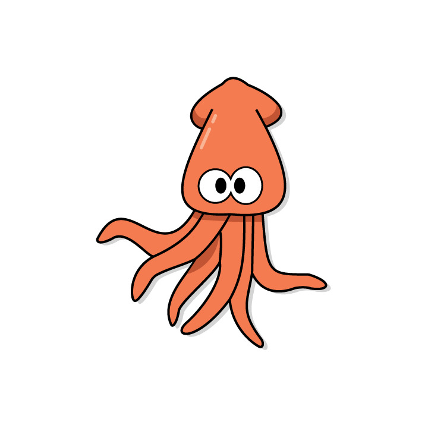

My name is Hunter Jarvis and I'm currently attending the University of Montana for a degree in Media Arts with a focus in Game design and Interactive Media. This is my third year here at the university and I have really enjoyed my time so far.
My plan for my future is to get a job at a game company and hopefully create video games. Whether that be in coding or the actual art of them, I'm not super picky because I love doing a little bit of everything. I think it's important to learn about everything that goes into creating a video game. From the early ages of pong and the Brown Box all the way up to PC games and new consoles and how they all work together. As video game creators, I think we need to appreciate all the work that previous companies and creators have done for the industry. They were pioneers of this field and we follow in their footsteps.
As for my artwork, a lot of my peers and collegues have made comments about how I am a 'jack of all trades' artist. I can't disagree with them because I love to create and make all kinds of things. Whether that be ceramic mugs and bowls all the way to drawing and even digital artwork. I also have some experience in production sewing machines and examples are shown in my gallery tab. I also know how to work laser cutters and 3D modeling for 3D printers. I know that all of this sounds like I should've gone into engineering, but I think that there is more creative power in telling a compelling story through a video game. I think my best two mediums I excell at are clay and graphite. I love how physical you have to be when working with clay and throwing on a wheel. Your touch is on every piece that you make which makes every piece special because no matter how hard you try, you will never make two pots that look the same. Every pot is individually beautiful. With graphite and illustrating I find that creating something that people recognize is powerful and shows the amount of care that goes into your illustrations. Although this may be less physically demanding than throwing clay on a wheel it can be just as enjoyable and just as time consuming to create the perfect piece of art. As I started, I love making anything with anything that I can, but I've also been told that when you focus on a little bit of everything you can't master one thing, technique, or skill. Why I find this powerful is because thats how this country is run, but I hate the feeling of locking myself into a career where I can't do a little bit of everything. I feel that the more I can know the more I can be helpful. This is who I am and I don't plan on changing anytime soon.
